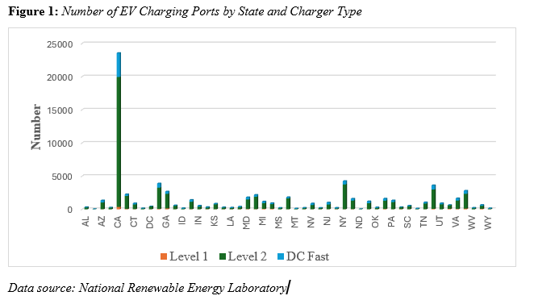
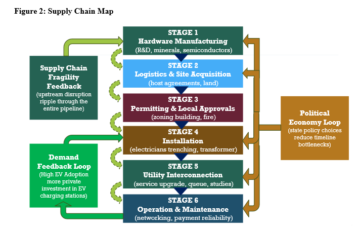

The deployment of electric vehicle (EV) charging infrastructure remains a binding constraint on the U.S. transition to electric mobility, despite unprecedented federal investment through the 2021 Bipartisan Infrastructure Law and the National Electric Vehicle Infrastructure (NEVI) Formula Program. This paper analyzes deployment bottlenecks in U.S. Direct Current Fast Charging (DCFC) infrastructure using a 9,229-station sample drawn from the National Renewable Energy Laboratory's Alternative Fuels Data Center (2020–2024). Employing a temporal-comparison methodology that contrasts pre-NEVI (2020–2021) and post-NEVI (2023–2024) Infrastructure Deployment Rates, the analysis documents a 153.5% national acceleration in monthly station openings—from 92.1 to 233.4 stations per month. However, state-level results vary dramatically: Texas accelerated 520.8% off a low baseline, California achieved only 8.7% growth at near-saturation, and Mississippi’s 860% acceleration translated to just 2.00 stations per month. This variation cannot be explained by hardware availability or capital constraints, which are nationally uniform; it correlates directly with state-level institutional capacity in permitting and utility interconnection—stages that account for an estimated 65–85% of total deployment time.
The paper identifies three bottlenecks (utility interconnection queues, local permitting fragmentation, and hardware/labor constraints) and proposes four targeted policy interventions: utility make-ready mandates, state-level model permitting legislation, federal workforce expansion, and strengthened domestic-content incentives. The findings argue that the deployment challenge is not technological but institutional, and that federal capital is necessary but insufficient without coordinated subnational reform.
The transition to electric vehicles (EVs) is a critical component of global efforts to mitigate climate change and reduce transportation-related greenhouse gas emissions. However, widespread consumer adoption of EVs hinges entirely on the availability of a reliable and accessible public charging network. Prior research consistently identifies public charging networks as a primary driver of electric vehicle uptake (Sierzchula et al., 2014; Mekky & Collins, 2024), a consensus supported by international energy monitors that classify public chargers as a key enabler of the EV transition (IEA, 2023). Despite this clear necessity, the deployment of charging infrastructure across the United States remains highly uneven and remarkably slow to scale. While EV adoption necessitates charging, the deployment of this infrastructure is fundamentally constrained by severe supply-chain bottlenecks.
To understand why existing infrastructure cannot currently match the pace of EV demand, this paper investigates the frictions embedded within the infrastructure rollout process. The primary research question is: What stages and actors deliver public Direct Current Fast Charging (DCFC), where do time and cost pile up, and how do federal programs and state/local policies change incentives and bottlenecks?
This paper goes beyond analyzing consumer demand to explicitly examine the supply-side mechanics of infrastructure deployment. First, it maps the DCFC deployment supply chain, detailing the complex coordination required between hardware manufacturing, installation, and utility interconnection. Second, it identifies the top three bottlenecks in this process, using quantitative evidence from the Alternative Fuels Data Center (AFDC) database alongside state-level case vignettes. Finally, it offers actionable policy recommendations tied directly to specific supply-chain stages to help accelerate deployment.
The remainder of this paper is structured to unpack these supply chain dynamics. Section II provides background on the US EV charging landscape and the current federal policy context. Section III introduces the conceptual framework, featuring a comprehensive supply chain map and an application of core economic concepts. Section IV outlines the data and methodology. Section V presents the quantitative analysis and results, followed by bottlenecks analysis in Section VI. The paper concludes with targeted policy implications in Section VII and VIII.
As of the first quarter of 2024, the United States electric vehicle (EV) charging network reached a total of 198,897 public and private charging ports. This infrastructure is categorized into three primary types: Level 1 (120V), which provides standard residential charging; Level 2 (240V), which offers approximately 25 miles of range per hour of charging; and Direct-Current Fast Charging (DCFC), which can provide 100 to 200+ miles of range in just 30 minutes. While the network is expanding – growing by 4.6% in the first quarter of 2024 alone – the deployment remains geographically concentrated. California stands out with a high volume of all types of charging ports, with Level 2 type reaching 19,590 public charging ports (over 32 percent of all public Level 2 ports in the country). Figure 1 suggests that there is a substantial investment in infrastructure to support the use of EVs, particularly in states with a high number of EVs, namely California, New York, Texas, and Florida.
25000
20000
15000
10000
5000
0
Level 1 Level 2 DC Fast

Recent trends indicate that DCFC ports are the fastest-growing segment, with an 8.2% increase in the first quarter of 2024, reflecting their critical role in enabling long-distance travel and reducing "range anxiety" (Brown et al., 2024). However, a significant gap remains between current capacity and future requirements; to support a projected 33 million EVs by 2030, the
U.S. will require approximately 1.2 million public charging ports, including 182,000 high-power DCFC ports (Wood et al., 2023).
The acceleration of the U.S. charging network is primarily driven by the 2021 Bipartisan Infrastructure Law (BIL), which allocated $7.5 billion toward EV infrastructure. A central pillar of this law is the National Electric Vehicle Infrastructure (NEVI) Formula Program, a $5 billion initiative managed by the Federal Highway Administration (FHWA) to build high-speed chargers along Alternative Fuel Corridors (AFCs), with the requirement that stations be located every 50 miles and within one mile of highway exits. As of mid-2024, eight states had already opened their first NEVI-funded stations (National Electric Vehicle Infrastructure Formula Program, 2024).
Complementing the BIL is the Inflation Reduction Act (IRA), which significantly modified the Section 30C tax credit for alternative fuel refueling property (Grant Thornton, 2024). The IRA increased the credit cap from $30,000 per location to $100,000 per "item of property" (such as individual charging ports), provided the property is located in qualifying low-income or non-urban census tracts. Furthermore, the Justice40 Initiative mandates that 40% of the overall benefits from these federal climate and transportation investments must flow to disadvantaged communities (DACs). States are now required to integrate equity metrics into their NEVI deployment plans, using tools like the Climate and Economic Justice Screening Tool (CEJST) to identify underserved areas.
The deployment of EV infrastructure is a complex multi-stage supply chain coordination problem that involves upstream R&D and hardware manufacturing, midstream network operations (Charge Point Operators), and downstream grid integration. Effective supply chain design is critical due to several inherent frictions:
Ultimately, the structure of this supply chain – from raw material sourcing to the utility rate design – determines whether infrastructure deployment can match the pace of EV demand or if institutional bottlenecks will continue to hinder adoption (Sierzchula et al., 2014; IEA, 2024).
The EV charging supply chain is a complex, interdependent system involving four primary stages. As illustrated in Figure 2, these stages include:

A fundamental concept in this framework is the coordination failure. Private firms often under-invest in hardware due to low initial utilization, while consumers hesitate to adopt EVs because of a lack of visible, reliable infrastructure. Effective supply chain design requires improved information flows between these actors to align incentives. For instance, "EV-ready" building codes that require installing conduit during new construction can reduce installation costs by up to 75% compared to retrofitting, demonstrating how early-stage coordination improves downstream economic efficiency (Alternative Fuels Data Center, 2024).
The supply chain is characterized by high capital intensity and risk. DCFC hardware costs range from $40,000 to $150,000 per unit, with utility interconnection adding significant time and financial uncertainty (AmpUp, 2026). To mitigate these risks, different organizational structures have emerged:
The analysis utilizes a comprehensive dataset from the Alternative Fuels Data Center (AFDC), managed by the National Renewable Energy Laboratory (NREL). The AFDC serves as the authoritative census for alternative fueling stations in the U.S. and Canada (Brown et al., 2024). The data follows the hierarchy defined by the Open Charge Point Interface (OCPI) protocol, which distinguishes between station locations, individual ports (for simultaneous charging), and connectors (Brown et al., 2024; AFDC, 2024).
The AFDC database includes critical variables for deployment analysis: station_name, open_date, state, ev_network, ev_dc_fast_num (number of DCFC ports), city, and status_code. The open_date variable, while subject to reporting lags, provides the most comprehensive publicly available record of station operational timelines.
To quantify the shift in infrastructure momentum, the study calculates the Infrastructure Deployment Rate (IDR) for two distinct periods. This metric represents the mean monthly volume of new station openings, allowing for a standardized comparison of deployment intensity before and after the NEVI rollout.
The Deployment Rate (α) is defined as the percentage change in the monthly IDR between the
baseline and implementation periods:
𝑰𝑫𝑹𝒑𝒓𝒆 (Baseline Rate): The average monthly station openings from January 2020 to December 2021 (n= 24 months).
𝑰𝑫𝑹𝒑𝒐𝒔𝒕 (Implementation Rate): The average monthly station openings from January 2023 to December 2024 (n = 24 months).
Transition Period: Data from the calendar year 2022 is excluded from the rate calculations to account for the policy lag between the enactment of the
Infrastructure Investment and Jobs Act (IIJA) and the formal approval of state-level NEVI deployment plans.
rollout. It does not isolate the specific causal impact of federal funding from other concurrent market drivers, such as private capital shifts or organic EV adoption growth.
Table 1 reveals a 153.5% increase in national DCFC deployment rate following
the Infrastructure Investment and Jobs Act, rising from 92.1 stations/month (2020–2021) to 233.4 stations/month (2023–2024) across 9,229 stations. This acceleration validates that
federal policy interventions, particularly the $7.5 billion BIL allocation and IRA's enhanced 30C tax credit is strongly associated with EV charging stations deployment. However, the national aggregate masks significant state-level heterogeneity explored in the next section.
Table 1: National DCFC Deployment Rate: Pre-NEVI vs. Post-NEVI
Period | Total Stations | Monthly Rate | Acceleration |
Pre-NEVI (2020–2021) | 2,210 | 92.1 stations/month | Baseline |
Post-NEVI (2023–2024) | 5,602 | 233.4 stations/month | +153.5% |
Note. Analysis based on 9,229 DCFC stations opened 2020–2024 with valid operational dates in AFDC database. Pre-NEVI and Post-NEVI periods each span 24 months.
As shown in Table 2, cross-state comparison reveals dramatic variation in how federal funding translates into operational infrastructure. Texas exhibits 520.8% acceleration (2.21 → 13.71 stations/month) from a low baseline, while California's modest 8.7% acceleration (28.62 → 31.12 stations/month) reflects near-saturation in an already-optimized institutional environment. Mississippi's 860% acceleration yields only 2.00 stations/month – just 6% of California's rate – demonstrating that federal capital alone cannot overcome institutional capacity constraints. This variation directly correlates with state-level bottlenecks at permitting and interconnection stages, not hardware availability.
Table 2: State-Level DCFC Deployment Rate Comparison (2020–2024)
State | Pre-NEVI Rate (stations/month) | Post-NEVI Rate (stations/month) | Acceleration | Total DCFC (2020–2024) |
Texas | 2.21 | 13.71 | +520.8% | 462 |
California | 28.62 | 31.12 | +8.7% | 1,728 |
Mississippi | 0.21 | 2.00 | +860.0% | 57 |
Note. Deployment rates calculated as total stations opened divided by 24 months for each period. Pre-NEVI: 2020–2021; Post-NEVI: 2023–2024.
Table 3 demonstrates that ChargePoint leads deployment volume with 33.9% market
share (52.17 stations/month), exceeding Tesla's 19.3% share (29.65 stations/month), challenging the conventional narrative that vertically integrated networks deploy faster. However, this reflects ChargePoint's capital-light hardware-as-a-service model and eligibility for state/federal grants versus Tesla's self-financed, high-utilization corridor strategy. The tradeoff: ChargePoint achieves scale (3,130 stations) with 85–90% uptime, while Tesla's selectivity yields
superior reliability (>99% uptime) but slower network expansion.
Table 3: Top 10 Charging Networks by Deployment Volume (2020–2024)
Rank | Network | Stations Deployed | Monthly Rate | Market Share |
1 | ChargePoint Network | 3,130 | 52.17 | 33.9% |
2 | Tesla Supercharger | 1,779 | 29.65 | 19.3% |
3 | Electrify America | 789 | 13.15 | 8.5% |
4 | EV Connect | 622 | 10.37 | 6.7% |
5 | eVgo Network | 609 | 10.15 | 6.6% |
6 | Blink Network | 461 | 7.68 | 5.0% |
7 | FORD_CHARGE | 216 | 3.60 | 2.3% |
8 | Non-Networked | 209 | 3.48 | 2.3% |
9 | RED_E | 176 | 2.93 | 1.9% |
10 | FCN | 140 | 2.33 | 1.5% |
Note. Monthly rate calculated as total stations divided by 60 months (2020–2024). Market share represents percentage of 9,229 DCFC stations analyzed.
Table 4 reveals two distinct phases: gradual recovery (2020–2022) with 58.7% cumulative growth, followed by NEVI-catalyzed surge with 73.5% growth in 2023 and sustained acceleration to 262.0 stations/month in 2024. The 252% increase from 2020 (893 stations)
to 2024 (3,144 stations) demonstrates that federal policy successfully de-risked private sector investment. The 2022 slowdown (7.6% growth) coincides with supply chain disruptions documented in the next section, while 2023–2024 acceleration reflects both anticipatory investment ahead of NEVI awards and operational NEVI-funded sites.
Table 4: Annual DCFC Deployment Volume (2020–2024)
Year | Stations Opened | States Active | Monthly Average | YoY Growth |
2020 | 893 | 49 | 74.4 | Baseline |
2021 | 1,317 | 48 | 109.8 | +47.5% |
2022 | 1,417 | 50 | 118.1 | +7.6% |
2023 | 2,458 | 51 | 204.8 | +73.5% |
2024 | 3,144 | 50 | 262.0 | +27.9% |
Note. States Active indicates number of states with at least one DCFC station opening in that year. YoY Growth calculated relative to prior year.
The data reveals substantial geographic concentration and institutional disparities in Direct-Current Fast Charging (DCFC) deployment. As of March 2026, the top ten states collectively account for 68% of all public DCFC ports, underscoring the highly uneven distribution of
charging infrastructure across the United States. California alone houses 26.7% of the nation's public charging ports (Brown et al., 2024), driven by the state's ZEV mandate, early adoption incentives, and streamlined permitting structures established under Senate Bill 1236.
Temporal analysis shows accelerated deployment post-2020, coinciding with the announcement and passage of the Infrastructure Investment and Jobs Act. Between 2020 and 2024, the U.S. DCFC network expanded by 147%, from approximately 23,000 ports to 56,845 ports as of Q1 2024 (Brown et al., 2024). However, this growth remains insufficient to meet the 182,000-port target necessary to support 33 million EVs by 2030 (Wood et al., 2023), signaling that supply-side bottleneck, rather than demand, are the binding constraint.
The utility interconnection process emerges as the single most significant temporal bottleneck, with median queue times of 6 – 18 months depending on state regulatory environment (RMI, 2022; Neubauer & Wood, 2023). DCFC stations require 150–350 kW of power per charger, often exceeding transformer capacity and triggering costly upgrades ($5,000 – $30,000+) with uncertain timelines that delay project commitment (IEA, 2023; RMI, 2022). California's Rule 21 reforms mandate expedited timelines and utility "make-ready" programs that reduce interconnection to 6 – 9 months, while Texas's deregulated ERCOT structure requires three-party negotiations adding 2 – 4 months (California Public Utilities Commission, 2022; Lazar & Shipley, 2023). The make-ready model – where utilities install infrastructure upfront with costs recovered through ratepayer fees – effectively shifts risk from developers to utilities (RMI, 2022).
Compounding these utility delays, local permitting introduces jurisdictional variation with timelines ranging from 2–6 weeks in streamlined municipalities to 4 – 6 months in jurisdictions lacking institutional experience (Frick et al., 2022). California Senate Bill 1236 (2022) mandates standardized checklists and maximum review timelines (60 days for commercial DCFC), reducing median permitting from 4 – 6 months to 1 – 2 months statewide (California Energy Commission, 2024). Mississippi's lack of state-level framework – leaving 82 counties with independent processes – contributes to its 2.00 stations/month deployment rate, only 6% of California's 31.12 stations/month (MDOT, 2024). Model permitting legislation paired with inspector training can reduce processing time by 50 – 70% (Frick et al., 2022).
Beyond these institutional barriers, hardware and labor constraints operate at manufacturing and installation stages, with DCFC units ($40,000 – $150,000) relying on semiconductor-based power electronics subject to supply disruptions that extended lead times from 3 – 4 months to 6 – 9 months (AmpUp, 2026; IEA, 2023). Labor shortages compound the bottleneck: fewer than 20% of residential electricians hold DCFC certification, with rural states having under 50 certified installers versus California's 2,400+, driving costs to $20,000–$40,000 (Bureau of Labor Statistics, 2023; U.S. Department of Labor, 2024; RMI, 2022). Unlike state-amenable institutional bottlenecks, hardware supply chains require federal policy: the IRA's enhanced 30C tax credit (10% bonus for domestic content) and expanded DOL EVITP workforce programs with tuition subsidies (Grant Thornton, 2024; U.S. Department of Labor, 2024).
The bottleneck and infrastructure deployment rate analyses support four targeted interventions to sustain deployment acceleration through 2030. Immediate-
impact interventions should prioritize utility make-ready
programs (reducing Stage E interconnection timelines by 40 – 50% through state Public Utility Commissions’ mandates) and state-level model permitting legislation replicating
California SB 1236 (compressing Stage C permitting from 4 – 6 months to 1–2 months), which together address the institutional bottlenecks responsible for 65 – 85% of deployment time.
Long-term capacity building requires expanding federal workforce development funding (DOL's EVITP program to certify 10,000 additional installers by 2027) and
strengthening IRA domestic content (10% bonus credit expansion to power electronics and transformers, plus $500M transformer production program). California's
comprehensive policy ecosystem, combining ZEV mandates, CALeVIP grants, utility make-ready programs, and SB 1236 streamlining, demonstrates that these interventions are mutually reinforcing: make-ready programs reduce interconnection uncertainty enabling faster permitting, workforce expansion ensures permitted projects proceed immediately to installation, and domestic content incentives stabilize hardware lead times. States implementing all four
policies concurrently can achieve the 12 – 15 month lower-bound deployment timeline necessary to meet 2030 infrastructure targets.
The 153.5% national deployment acceleration documented in this analysis, from 92.1 to 233.4 stations/month following the Infrastructure Investment and Jobs Act, validates that federal policy successfully catalyzes private sector investment in charging infrastructure. However,
dramatic state-level variation reveals a fundamental tension: Texas's 520.8% acceleration demonstrates rapid gains when federal funding meets moderate institutional capacity, California's modest 8.7% acceleration reflects near-saturation despite optimal policies, and Mississippi's 860% acceleration translating to only 2.00 stations/month illustrates that capital alone cannot overcome institutional deficits. This variation underscores
that the deployment challenge is not technological innovation but unglamorous institutional reform: standardizing permitting checklists, training building inspectors, reforming
utility interconnection queues, and expanding certified electrician pipelines. The 252% increase in annual DCFC deployments from 893 stations (2020) to 3,144 stations (2024) demonstrates momentum is building. The question is whether policymakers, utilities, and local governments will sustain this acceleration through coordinated state and federal institutional reform, or whether deployment will plateau as low-hanging fruit is exhausted and institutional bottlenecks reassert dominance.
Alternative Fuels Data Center. (2024). AFDC station locator. National Renewable Energy Laboratory. https://afdc.energy.gov/stations
AMPUP. (2026). Commercial EV charging station guide: What to buy in 2026. https://www.ampup.io/blog/commercial-ev-charging-station-buyers-guide-2026#:~:text=How%20much%20does%20a%20commercial,drives%20most%20of%20the%20v ariability.
Brown, A. et al. (2024). Electric Vehicle Charging Infrastructure Trends from the Alternative Fueling Station Locator: First Quarter 2024 (Technical Report NREL/TP-5400-90288). National Renewable Energy Laboratory. https://afdc.energy.gov/files/u/publication/electric_vehicle_charging_infrastructure_trends_first_ quarter_2024.pdf
Bureau of Labor Statistics. (2023). Occupational outlook handbook: Electricians. U.S. Department of Labor. https://www.bls.gov/ooh/construction-and-extraction/electricians.htm
California Energy Commission. (2024). California electric vehicle charging infrastructure assessment: Analyzing charging needs to support zero-emission vehicles in 2030. CEC-600-2024-001.
California Public Utilities Commission. (2022). Rule 21 interconnection reforms: Final decision on expedited EV charging interconnection. Decision 22-05-028.
Electrify America. (2024). Cycle 4 ZEV Investment Plan: Q3 2024 report to California Air Resources Board. https://media.electrifyamerica.com/
Federal Highway Administration. (2023). NEVI Formula Program guidance and implementation manual. U.S. Department of Transportation. https://www.fhwa.dot.gov/environment/alternative_fuel_corridors/
Frick, N. M., Schwartz, L. C., & Bliss, J. (2022). Overcoming barriers to deploying electric vehicle charging infrastructure: Insights from municipal officials. Energy Policy, 169, 113188. https://doi.org/10.1016/j.enpol.2022.113188
Grant Thornton. (2024). IRS offers helpful guidance for EV charging credit. https://www.grantthornton.com/insights/alerts/tax/2024/flash/irs-offers-helpful-guidance-for-ev-charging-credit
International Energy Agency. (2023). Global EV outlook 2023: Catching up with climate ambitions. IEA Publications. https://www.iea.org/reports/global-ev-outlook-2023
Joint Office of Energy and Transportation (2024). National Electric Vehicle Infrastructure Formula Program: ANNUAL REPORT | PLAN YEAR 2023–2024. http://driveelectric.gov/
Joint Office of Energy and Transportation. (2024). National Electric Vehicle Infrastructure (NEVI) Formula Program: State plans and quarterly reports. https://driveelectric.gov/state-plans
Lazar, J., & Shipley, J. (2023). Getting to equitable net-zero: Policy pathways for transportation electrification. Regulatory Assistance Project
Mississippi Department of Transportation. (2024). Mississippi EV infrastructure deployment plan. MDOT Planning Division. https://mdot.ms.gov/documents/Planning/Transportation%20Asset%20Management%20/EV/MS
%20EV%20Infrastructure%20Deployment%20Plan.pdf
National Renewable Energy Laboratory. (2023). Electric vehicle charging infrastructure trends and projections (NREL Technical Report). U.S. Department of Energy. https://www.nrel.gov/transportation/
Nelder, C. (2017). Rate-Design Best Practices for Public Electric-Vehicle Chargers. RMI. https://rmi.org/rate-design-best-practices-public-electric-vehicle-chargers/
Neubauer, J., & Wood, E. (2023). Will your electric vehicle get you home from work? Estimating range requirements from GPS data. Transportation Research Part D, 115, 103593
Nicholas, M., & Hall, D. (2023). Lessons learned on early electric vehicle fast-charging deployments. International Council on Clean Transportation. https://theicct.org/
RMI (Rocky Mountain Institute). (2022). Plugging the gap: A call to action for electric vehicle charging infrastructure. RMI Energy Transition Reports. https://rmi.org/
Sierzchula, W., Bakker, S., Maat, K., & van Wee, B. (2014). The influence of financial incentives and other socio-economic factors on electric vehicle adoption. Energy Policy, 68, 183-
194. https://doi.org/10.1016/j.enpol.2014.01.043
Slowik, P., & Lutsey, N. (2022). The continued transition to electric vehicles in U.S. cities. International Council on Clean Transportation Working Paper
U.S. Congress. (2022). Inflation Reduction Act of 2022, Pub. L. No. 117-169, § 30C (Tax credit for alternative fuel vehicle refueling property)
U.S. Department of Energy. (2024). Alternative Fuels Data Center. National Renewable Energy Laboratory. https://afdc.energy.gov/
U.S. Department of Labor. (2024). Electric Vehicle Infrastructure Training Program (EVITP) fiscal year 2024 report. Employment and Training Administration. https://www.dol.gov/agencies/eta/evitp
Wood, E., Rames, C., Muratori, M., Raghavan, S., & Melaina, M. (2023). National plug-in electric vehicle infrastructure analysis. National Renewable Energy Laboratory. NREL/TP-5400-78615.